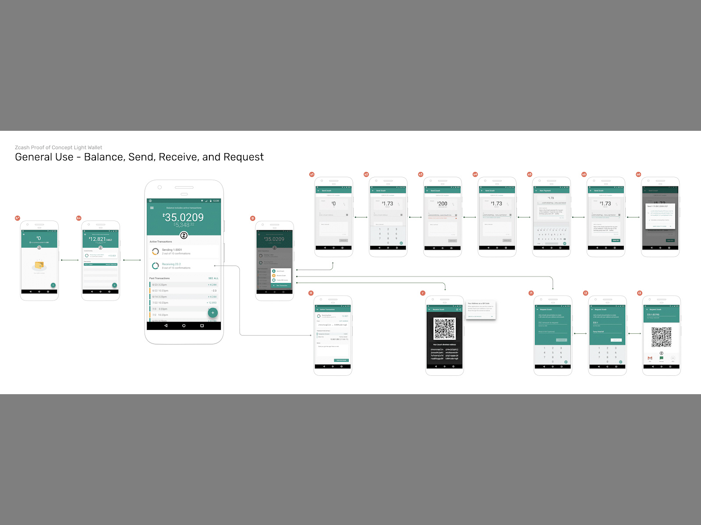
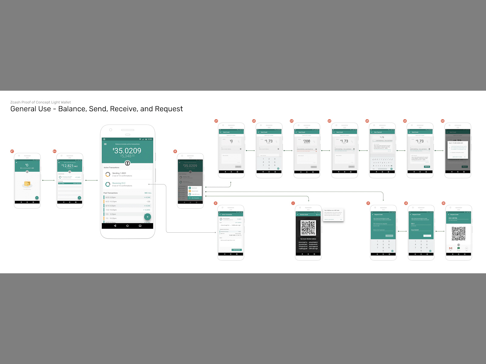

Got an interesting project to discuss?
Give me an email or connect with me on LinkedIn.


Got an interesting project to discuss?
Give me an email or connect with me on LinkedIn.
The following is a casestudy on work done for Electric Coin Company, showcasing Zcash and Mobile Wallets.
Cryptocurrency
Privacy Centric
Mobile Payments
Design Leader
Collaborative
Mentoring
Hands-On
Team player
Figma/Sketch/Invision/Adobe CC
UX Reseach & Testing
UX/UI Design
Interation Design
Service Design
The Zcash blockchain-based payment network leverages zero-knowledge proofs allowing shielded transactions from public eyes. The technology worked smoothly, but usability required an expert level understanding and a desktop (or server) running a node you would interact with through a command line interface. There were more pain points around the four different types of transactions: transparent or shielded with qualities of shielding or deshielding. The users didn’t understand that their privacy coin was not private by default. This was a huge marketing mistake, but one required to follow regulations and avoid being thought of as a darkweb coin. Part of my job would be to try and fix this basic misunderstanding.
The design brief evolved overtime*, but the final goal was a functioning public wallet. What drew me to this project was their mandate of helping the world establish financial freedom with the mantra 'Privacy is a human right'. It also allowed me to collaborate with cryptographers working on exotic math and translate my traditional banking experience to the blockchain.
*Zcash renamed themselves The Electric Coin Company to create a clear difference between the protocol/token itself and themselves as partial stewards of the coin. There is a second steward, the Zcash Foundation, which also works for the protocol’s benefit to ensure decentralization. I worked full time for ECC, but also collaborated with ZF extensively. For the sake of this case-study I will be talking about Zcash as a product and will use that name consistently, for clarity.
My starting responsibility was to bootstrap a team and start working with leadership to create a public product. My initial mandate was to create the mobile wallet designs, hire developers, and provide design support for implementation. While interviewing developer candidates, we immediately spun up a user research project and found our first problem: How do you find users to interview if the product is completely secure and private? How do you get anonymous people to raise their hand into the air and announce themselves? This was going to be a fun project.
Our investigative solution was two-fold:
1. We performed canvassing or 'on-the-street' interviews of people at a number of cryptocurrency conferences. We questioned them with the goal of having them self-identify as a group (to help us define personas), and to gather feedback on a click-through wireframe of the prototype. We wanted an idea of general user experience to forecast pain points and give us a heads start. This is also sometimes called the ‘Zooko method’ as he would daily use ZEC to pay and tip baristas.
2: We requested feedback through forums and social media. The feedback was gathered with a google form with anonymous entry allowed. Again users were asked to self identify as to what type of user they considered themselves. A script requested they click through tasks, give their thoughts on the difficulty, and finally let us know of any ideas or feature requests they wish to share.

All of this user research allowed us to validate enough of our assumptions to create personas and decide on which mobile platform (Android/iOS) we would use to design the initial prototype. We created a rapid prototype and tested it on usertesting.com. It was a small sample size, with the interview only requiring that the user knew about cryptocurrency, and a script that had them create a wallet, receive and send funds, and view the transaction details.
We created a rapid prototype and tested it on usertesting.com. It was a small sample size, with the interview only requiring that the user knew about cryptocurrency, and a script that had them create a wallet, receive and send funds, and view the transaction details.
We targeted developers believing that if we created the tools the ecosystem would help build itself. This was proven somewhat true, but future network upgrades made this tricker than we had expected. It should be mentioned that marketing had a different set of personas which prioritized getting ZEC listed on more exchanges and general Zcash education. Regardless, we chose to more thoroughly follow our goal of creating financial freedom for all, and picked Android as our first platform. It could reach, with supported OS versions, 97% of their base - so we could reach more users in emerging economies and make remittance available across the globe.
About this time we had our proof-of-concept: a wallet app that could create zk-proofs on the device and work with a server to send/receive funds without any break in privacy. We were off to a good start!
The proof of concept was based on wireframes and rough sketches. While we had gotten feedback from user testing, that was with an invision click through prototype - not real proofs and blockchain transactions. This version of the app proved what we believed possible, and set us clearly as the only coin with true privacy. Below you can see the wireframes used to validated this PoC.
Wireframes:


We gathered final (for this phase) feedback from the stakeholders and started to implement feedback synthesized from all the earlier designs and prototypes. We used these findings and the Proof-of-Concept to create a Reference Wallet; an open-source wallet on Android (which embraced the Material Design system from Google). All code and assets were published and offered to 3rd parties to bootstrap their own wallet.
 https://electriccoin.co/blog/zcash-reference-wallet-design/
https://electriccoin.co/blog/zcash-reference-wallet-design/

After the Reference Wallet was released we did a second round of user research with added facets. Now that we had a fully functioning product we were able to truly test all the user flows and we did this in two ways:
 


Electric Coin Company
2018-2023
Capital One; Small Business Banking
2014-2017
Creative Developer for mobile games company
2009-2013
User Experience Designer for smart televisions
2004-2008
Marketing and Ad Agency Microsite Production
1998-2003
Wireframes are a crucial tool in the design process, providing a blueprint for the layout and functionality of a digital product. To create effective wireframes, it's important to understand the user's needs and goals, as well as the requirements and constraints of the project.
To create effective designs, it's important to understand the needs, goals, and behaviors of the target audience. This can be achieved through user research and testing, which can uncover insights about user preferences and pain points. Once this information is gathered, designers can create wireframes and prototypes to iterate and refine the design.
Webflow provides extensive design control, allowing users to customize every aspect of their websites. From typography and layouts to animations and interactions, users have the flexibility to create unique and visually appealing designs.
Awards & Recognitions
Zcash Mobile App
Zcon 2022